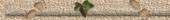
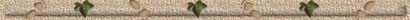

|

Stammbäume
sind die einzige
Baumart,
die gelegentlich
Grund
hätte, ihre
Wurzeln
zu verbergen.
Anonym

Man muss
in der Lage sein, sich Fehlendes vorzustellen und Vorhandenes wegzudenken,
hinter die Dinge zu blicken und ihnen den eigenen Geschmack aufzuopfern.
Für
kurze Zeit, eine Woche oder so, hatten wir vielleicht sogar geglaubt, dass
der andere der Richtige für uns sein könnte. Aber nein, es würde
irgendwann zu Ende gehen, Nicht heute, nicht diese Woche, aber bald, weil
die Flut, die uns mitgerissen hatte, bereits wieder am Verebben war und
nur ein paar mit geschwemmte Trümmer hinterlassen würde.
Alles geht vorüber.
Nur die Vergangenheit nicht...
Auch im vornehmsten
Stammbaum
gibt es hin und wieder Astlöcher...
Werner
Mitsch
Mir schwant etwas,
sagte der Gänserich,
als die Hälse seiner Kinder immer länger wurden.
Werner
Mitsch
Am Anfang war die
Ewigkeit.
Dann kam die große Zeit der Zeit...
Werner Mitsch
Vertraue auf deine
Zukunft.
Bedenke, wieviel Vergangenheit hinter ihr steht...
Werner Mitsch
Der Mensch pflanzt sich nicht mit seinem
Namen in einem anderen fort, sondern durch die Veränderungen, die er
bewirkt hat.
Ehrenburg
Menschen, die nicht auf ihre Vorfahren
zurückblicken, werden auch nicht an die Nachwelt denken.
Edmund Burke
Man muss die Vergangenheit kennen, ohne
dieses Wissen verirrt man sich im Leben.
Maxim Gorki
Ein Tropfen Ewigkeit hat mehr Gewicht als ein
ganzes Meer der Zeit.
Karl Barth
Erst die Fremde lehrt uns, was wir an der
Heimat besitzen
Theodor Fontane
Quellenmäßig haben wir nie mit objektiven
Tatsachen, sondern immer nur mit Auffassungen von solchen zu tun.
Johann Gustav Droysen
Warum liebt man die Heimat? Deswegen: das
Brot schmeckt da besser, der Himmel ist höher, die Luft ist da würziger,
die Stimmen schallen da kräftiger, der Boden begeht sich da leichter.
Berthold Brecht
Das schönste Denkmal, das ein Mensch bekommen
kann, steht in den Herzen der Mitmenschen.
Albert Schweitzer
Damit das Mögliche entsteht, muss immer
wieder das Unmögliche versucht werden.
Hermann Hesse.
Der Optimist ist ein Mensch, der überall
grünes Licht sieht, während der Pessimist nur das rote Stopplicht
erblickt. Aber der wirklich Weise ist farbenblind.
Albert Schweitzer
Verstehen können wir das leben, wenn wir in
die Vergangenheit blicken - aber leben müssen wir in der Zukunft.
Paul Eipper
Das ist ein Land der lebenden und ein Land
der Toten, und die Brücke zwischen ihnen ist die Liebe, dass ewig
Bindende, der einzige Sinn.
Edo Müller, Ortssippenbuch von Dunum
Einige Genealogen sind nichts anderes als die
Vergangenheitsform von Genealügen.
anonym
Des Menschen Leben gleicht dem Morgentau,
gleicht einem Blitz.
Akutagawa
Die Stille weiß alles. Die Stille sagt alles.
Und aus der Seele, die gestern untröstlich war, steigt das Lied
unermesslicher Glückseligkeit.
Marie Noel.
I think most doctors that write
prescriptions are descended from some of the pastors in my church records.
Celia Mitschelen in s.g.g
Es müsste ein brauchbares Mittelding geben
zwischen lückenloser Informiertheit und glücklicher Ahnungslosigkeit.
P. Schumacher
Wer sich an die Vergangenheit nicht erinnern
kann, ist dazu verdammt, sie zu wiederholen.
G. de Santayana
Verliere keine Zeit und Geld mit
Ahnenforschung! Du brauchst nur in die Politik einzusteigen und deine
Gegner werden es für dich kostenlos herausfinden.
Mark Twain
Wer um die Wurzeln seines Lebens weiß, kann
seinen Gedanken, Worten und Werken Flügeln verleihen.
E. Ferste
Angenehm
ist am Gegenwärtigen
die Tätigkeit,
am Künftigen
die Hoffnung
und
am Vergangenen
die Erinnerung.
Aristoteles
Ende Gut - alles gut!
|